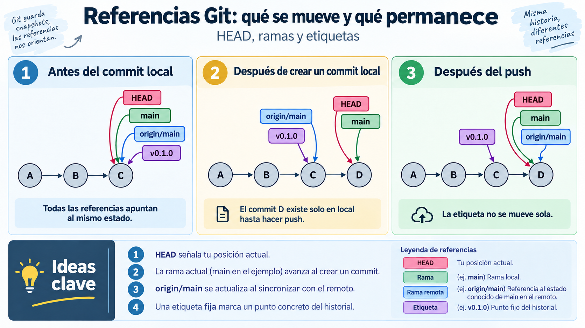

🧩 Control de versiones y documentación¶
Descarga de diapositivas
La sesión anterior terminó con una idea importante: un despliegue profesional no puede depender de los ficheros que casualmente tenemos en un ordenador ni de una lista de pasos que solo recuerda una persona.
Antes de contenerizar, automatizar o publicar una aplicación necesitamos una fuente de verdad donde queden registrados el código, la configuración que sí puede compartirse, la documentación y el procedimiento de trabajo.
Ese lugar será el repositorio Git.
El repositorio debe permitir reconstruir y explicar un estado desplegable del sistema.
Eso no significa guardar todo en Git. Los secretos, los datos generados y los artefactos reconstruibles deben permanecer fuera. En esta sesión aprenderás a decidir qué se versiona, cómo evoluciona y cómo se comparte sin perder trazabilidad.
Mapa de la sesión
El trabajo seguirá una progresión sencilla: registrar → proteger → compartir → revisar → identificar versiones.
flowchart LR
A["Registrar"] --> B["Proteger"] --> C["Compartir"] --> D["Revisar"] --> E["Identificar"]🧠 1. Git registra estados, no copias de carpetas¶
Git permite conservar la evolución de un conjunto de ficheros. Cada commit identifica un estado del proyecto y queda relacionado con los estados anteriores.
Esto nos interesa especialmente en despliegue porque no solo versionaremos código: también aparecerán documentación, configuración reproducible y ficheros que describen cómo ejecutar o publicar la aplicación.
1.1. Directorio de trabajo, staging e historial¶
Entre editar un fichero y registrarlo en el historial existe una zona intermedia: el área de preparación o staging area.
flowchart LR
W["Directorio de trabajo"] -->|"git add"| S["Staging"]
S -->|"git commit"| H["Historial"]| Zona | Qué contiene | Operación habitual |
|---|---|---|
| Directorio de trabajo | El estado actual de los ficheros | editar |
| Staging | Los cambios elegidos para el próximo commit | git add |
| Historial | Los estados ya registrados | git commit |
La preparación permite decidir qué cambios forman parte del siguiente commit. Si has modificado tres ficheros, no estás obligado a registrarlos todos juntos.
Por ejemplo:
Solo esos cambios preparados entrarán en el próximo commit.
Acostúmbrate a git status
Utilízalo antes y después de git add y antes de cada commit. Git registra lo que has preparado, no lo que recuerdas haber modificado.
1.2. Un commit debe representar una idea¶
Un commit útil debería responder a una intención concreta. En el módulo utilizaremos una convención sencilla inspirada en Conventional Commits:
| Prefijo | Uso habitual |
|---|---|
feat: |
añade funcionalidad |
fix: |
corrige un error |
docs: |
modifica documentación |
test: |
añade o modifica pruebas |
chore: |
mantenimiento o configuración |
Ejemplos:
| Text Only | |
|---|---|
Mensajes como cambios, final o arreglo2 hacen que el historial pierda utilidad.
Puedes inspeccionarlo con:
Git no versiona directorios vacíos
Git registra ficheros. Si una carpeta está vacía, no existe nada que añadir al historial. Por eso algunos proyectos utilizan un fichero convencional como .gitkeep cuando necesitan conservar una estructura vacía.
🚫 2. Decide qué entra antes de hacer el primer commit¶
Un repositorio útil contiene aquello que necesitamos conservar, revisar y reconstruir. No debe convertirse en una copia indiscriminada del directorio de trabajo.
2.1. .gitignore: excluir lo que no debe versionarse¶
Las exclusiones más habituales pertenecen a tres grupos:
| Tipo | Ejemplos | Por qué queda fuera |
|---|---|---|
| Artefactos reconstruibles | target/, .class |
pueden volver a generarse |
| Configuración local | .idea/, .vscode/, *.iml |
depende del equipo |
| Secretos o datos locales | .env, claves, uploads/ |
no deben publicarse o no forman parte del código |
Las reglas se escriben en .gitignore:
| Text Only | |
|---|---|
Para saber qué regla está ignorando una ruta:
| Bash | |
|---|---|
No ignores demasiado
Un fichero de configuración no es automáticamente un secreto y un .jar no es automáticamente prescindible. Excluye aquello que sabes que es local, generado o sensible.
Un repositorio puede contener varios .gitignore. Las reglas de uno situado dentro de una carpeta pueden complementar las reglas generales de la raíz.
2.2. .gitignore no borra el historial¶
Añadir un fichero a .gitignore no elimina lo que ya se registró antes.
Si un fichero ya está versionado y solo quieres dejar de seguirlo:
Pero si ese fichero contenía una contraseña o un token real, el problema es distinto:
Un secreto publicado debe considerarse comprometido y debe revocarse o cambiarse.
Borrarlo en un commit posterior no impide que siga existiendo en commits anteriores o en clones realizados antes.
La forma habitual de documentar la configuración necesaria sin publicar valores reales es versionar una plantilla:
Por ejemplo:
| Text Only | |
|---|---|
Evita repositorios Git anidados
Si incorporas un proyecto dentro de otro repositorio, comprueba que no conserva accidentalmente su propio directorio .git/. En este módulo queremos un único historial para el repositorio completo.
En Linux puedes localizar repositorios anidados con:
| Bash | |
|---|---|
🧯 3. Deshacer: primero identifica dónde está el cambio¶
No existe un único comando para “deshacer”.
Antes de actuar responde dos preguntas:
- ¿El cambio está en el directorio de trabajo, en staging o en un commit?
- Si está en un commit, ¿ese commit ya se ha publicado?
flowchart TD
A["Hay un cambio que corregir"] --> B{"¿Está en un commit?"}
B -->|"No"| C{"¿Está en staging?"}
C -->|"No"| D["restore"]
C -->|"Sí"| E["restore --staged"]
B -->|"Sí"| F{"¿Ya se publicó?"}
F -->|"No"| G["Puede rehacerse localmente"]
F -->|"Sí"| H["revert"]3.1. Cambios que todavía no forman parte del historial compartido¶
Si has modificado un fichero, no lo has preparado y quieres recuperar la versión del último commit:
| Bash | |
|---|---|
El cambio sin registrar se pierde
git restore descarta esas modificaciones. Git no puede recuperar algo que nunca llegó a registrarse.
Si el fichero ya está en staging pero quieres conservar lo escrito:
| Bash | |
|---|---|
El fichero seguirá modificado, pero dejará de formar parte del próximo commit.
También puedes recuperar un fichero desde otro punto del historial:
| Bash | |
|---|---|
Si necesitas rehacer un commit que todavía es únicamente local, Git permite modificar ese historial. Por ejemplo:
| Bash | |
|---|---|
reset queda como operación de consulta
No necesitas utilizarlo en la actividad de hoy. Lo importante es comprender que un commit local puede rehacerse antes de compartirlo.
3.2. Un error ya publicado se corrige hacia delante¶
Si el commit erróneo ya está en el remoto, normalmente no conviene hacerlo desaparecer reescribiendo un historial que otras personas pueden haber descargado.
Supón:
Con:
| Bash | |
|---|---|
obtienes:
El commit original sigue existiendo y queda registrada también su corrección.
Error privado y local: puedes rehacer.
Error publicado y compartido: corrige hacia delante.
| Situación | Operación habitual |
|---|---|
| Cambio no preparado que quieres descartar | git restore <fichero> |
| Fichero preparado que quieres conservar | git restore --staged <fichero> |
| Recuperar un fichero desde otro commit | git restore --source=<commit> <fichero> |
| Rehacer el último commit todavía local | git reset --soft HEAD~1 |
| Deshacer el efecto de un commit ya publicado | git revert <commit> |
☁️ 4. Del repositorio local a GitHub¶
Hasta ahora el historial existe únicamente en tu equipo. Un repositorio remoto permite compartirlo y será durante el módulo el punto común desde el que se revisará el trabajo.
4.1. Autenticación por HTTPS¶
GitHub permite trabajar con repositorios mediante SSH o HTTPS. En este módulo utilizaremos HTTPS.
Cuando Git necesita autenticarse contra GitHub por HTTPS, no se utiliza la contraseña normal de la cuenta. Puede utilizarse una credencial como un Personal Access Token (PAT).
Un PAT:
- puede tener caducidad;
- puede limitar sus permisos;
- puede revocarse sin cambiar la contraseña de la cuenta.
Un PAT es un secreto
No lo escribas en el repositorio, no lo incluyas en capturas y no lo guardes en un fichero versionado. Si se publica accidentalmente, revócalo y crea uno nuevo.
Simplificación utilizada en el aula
Durante las primeras sesiones utilizaremos un único PAT classic con los ámbitos necesarios para trabajar con el repositorio privado y publicar posteriormente imágenes en GitHub Container Registry:
Esta decisión reduce el número de credenciales que tendrás que gestionar, pero el ámbito repo es amplio.
En un entorno profesional: mínimo privilegio
Siempre que sea viable conviene limitar cada credencial a los repositorios y permisos estrictamente necesarios. Una alternativa más restrictiva sería utilizar un token fine-grained para Git y una credencial separada para el registro de contenedores.
Aunque reutilicemos el mismo token, Git y Docker no comparten una sesión: Git se autenticará contra github.com y Docker, más adelante, contra ghcr.io.
4.2. Remoto y sincronización¶
Si partes de una carpeta nueva, puedes crear el repositorio local haciendo que la rama principal se llame main desde el principio:
Después crea en GitHub un repositorio vacío y configura el remoto:
Publica main:
| Bash | |
|---|---|
-u asocia la rama local con su rama remota. Después normalmente bastará con:
| Bash | |
|---|---|
fetch y pull no hacen exactamente lo mismo:
| Operación | Qué hace |
|---|---|
git fetch |
actualiza la información conocida del remoto sin modificar tu rama actual |
git pull |
descarga e intenta integrar los cambios |
git pull --ff-only |
actualiza solo si la rama puede avanzar sin crear una fusión inesperada |
Durante el curso utilizaremos con frecuencia:
| Bash | |
|---|---|
Repositorio privado
El repositorio del curso será privado. Para que el profesor pueda revisarlo tendrás que añadirlo como colaborador. Antes de hacer público cualquier repositorio revisa siempre el historial, secretos, claves, datos personales y capturas.
🌿 5. Ramas, Pull Requests y comprobaciones¶
Trabajar directamente sobre main dificulta separar cambios incompletos del último estado integrado. Por eso utilizaremos ramas cortas para el trabajo de cada sesión.
En este módulo,
mainrepresenta el último estado integrado que consideramos desplegable.
No significa que esté desplegado en producción en ese momento; significa que evitaremos integrar deliberadamente trabajo incompleto o roto.
5.1. El flujo habitual del módulo¶
flowchart TB
A["main actualizado"] --> B["rama sesion-XX"]
B --> C["commits + push"]
C --> D["PR + comprobaciones"]
D --> E["merge en main"]Para empezar una sesión:
Después de trabajar:
| Bash | |
|---|---|
5.2. La Pull Request es el punto de revisión¶
Una Pull Request (PR) propone incorporar los cambios de una rama en otra. Permite revisar:
- qué commits entrarán;
- qué ficheros y líneas cambian;
- por qué se realizó el cambio;
- qué comprobaciones se han hecho;
- si las comprobaciones automáticas han terminado correctamente.
Una descripción sencilla puede responder a tres preguntas:
| Markdown | |
|---|---|
Documenta el propósito
En una PR interesa explicar qué cambia, por qué y cómo se ha comprobado. No hace falta narrar cada git add o git push.
Una PR abierta sigue la evolución de la rama. Si haces otro commit y lo publicas, la misma PR se actualiza automáticamente.
GitHub también puede ejecutar comprobaciones automáticas mediante GitHub Actions. Estos workflows se guardan dentro de .github/workflows/. Durante las primeras sesiones utilizarás uno ya preparado; de momento basta con saber:
| Text Only | |
|---|---|
Más adelante estudiaremos cómo construir estas automatizaciones.
5.3. Fusionar y volver a main¶
En el módulo utilizaremos Create a merge commit cuando queramos conservar de forma visible la bifurcación y la integración de la rama.
Después de fusionar la PR en GitHub:
Puedes observar el historial con:
| Bash | |
|---|---|
🏷️ 6. Ramas, referencias y versiones¶
Una rama y una versión no representan lo mismo.
Una rama avanza a medida que aparecen nuevos commits. Una etiqueta permite identificar un punto concreto del historial aunque la rama siga avanzando.
6.1. HEAD, main, origin/main y las etiquetas¶
En Git, varios nombres pueden señalar al mismo commit y después evolucionar de forma distinta. Entender qué representa cada referencia ayuda a saber qué tienes en local, qué estado conoces del remoto y qué versión has decidido conservar como punto estable.

Figura 4. Comportamiento de HEAD, main, origin/main y una etiqueta antes y después de crear y publicar un commit. Elaboración propia.
En el ejemplo, al principio todas las referencias apuntan al commit C. Cuando creas un nuevo commit D:
main, que es la rama actual, avanza hastaD;HEADcontinúa asociado amain, por lo que también queda situado en ese nuevo estado;origin/mainsigue representando el último estado conocido demainen el remoto;- la etiqueta
v0.1.0permanece enC.
Cuando publicas el cambio con push, el remoto avanza y origin/main pasa a reflejar ese nuevo estado. La etiqueta, en cambio, no se mueve automáticamente.
Qué debes retener
HEADindica dónde estás trabajando.maines una rama local y avanza cuando haces nuevos commits sobre ella.origin/mainrepresenta el estado conocido demainen el remoto.- Una etiqueta identifica un punto concreto del historial y permanece allí hasta que la cambies deliberadamente.
6.2. Etiquetas y versionado semántico¶
Para crear una etiqueta anotada:
Comprueba:
Cuando una aplicación utiliza versionado semántico, una versión suele expresarse como:
| Text Only | |
|---|---|
| Parte | Cuándo cambia |
|---|---|
| MAYOR | cambios incompatibles |
| MENOR | nueva funcionalidad compatible |
| PARCHE | corrección compatible |
Ejemplos:
| Text Only | |
|---|---|
La etiqueta del repositorio del curso
v0.1.0 identificará un primer estado del repositorio del módulo. No tiene por qué coincidir con la versión interna de la aplicación Escaparate.
📝 7. Documentación que también se versiona¶
La documentación forma parte del despliegue porque explica qué contiene el repositorio, qué necesita y cómo se trabaja con él.
Markdown encaja bien porque es texto plano, Git puede mostrar sus cambios línea a línea y los enlaces relativos siguen funcionando cuando otra persona clona el repositorio.
7.1. Markdown esencial¶
No necesitas memorizar una sintaxis extensa. Para las prácticas del módulo bastará con unas pocas construcciones:
| Necesidad | Ejemplo |
|---|---|
| Título | # Informe |
| Subtítulo | ## Comprobación |
| Lista | - elemento |
| Código en línea | `git status` |
| Enlace | [Informe](docs/informe.md) |
| Imagen |  |
Para bloques de comandos:
| Markdown | |
|---|---|
Utiliza rutas relativas para enlazar ficheros del propio repositorio:
| Markdown | |
|---|---|
No utilices rutas absolutas de tu equipo, porque dejarían de funcionar al clonar el repositorio en otra máquina.
7.2. Un README útil¶
El README no es un diario de clase. Es la puerta de entrada al repositorio.
Una estructura inicial razonable es:
Al principio algunos apartados estarán incompletos. El README evolucionará junto con el proyecto.
Evita duplicar los ficheros técnicos dentro de la documentación. Si existe:
el README puede enlazar o explicar su función, pero no necesita copiar el mismo YAML en varios lugares.
Durante el módulo mantendremos una separación semejante a:
| Text Only | |
|---|---|
Fuente de verdad, no almacén de secretos
El repositorio debe contener la información necesaria para entender y reconstruir el despliegue, pero no los valores secretos ni los datos privados necesarios para ejecutarlo.
🎯 Qué debes saber hacer al salir de esta sesión¶
Al terminar deberías poder:
- distinguir directorio de trabajo, staging e historial;
- preparar cambios y crear commits con una intención clara;
- decidir qué debe quedar fuera del repositorio y comprobar reglas de
.gitignore; - explicar por qué un secreto publicado debe revocarse;
- elegir entre
restore,restore --stagedyrevertsegún el estado del cambio; - conectar un repositorio local con GitHub y trabajar mediante una rama corta;
- entender el papel de una Pull Request y de sus comprobaciones automáticas;
- distinguir una rama que avanza de una etiqueta que identifica un estado;
- documentar el repositorio con Markdown, rutas relativas y un README útil.
✅ Ideas clave¶
Abrir resumen
- Git registra estados de ficheros y permite reconstruir su evolución.
- El flujo básico es directorio de trabajo → staging → commit.
git statuses la comprobación habitual antes de registrar cambios..gitignoreevita nuevas incorporaciones, pero no borra el pasado.- Un secreto publicado se revoca o cambia; borrarlo después no elimina la exposición.
- La forma de deshacer depende de dónde está el cambio y de si ya se ha compartido.
- En el módulo trabajaremos con rama corta → Pull Request → comprobaciones →
main. - Una rama avanza; una etiqueta permite identificar un estado concreto.
- La documentación y la configuración reproducible forman parte del repositorio; los secretos no.
En la actividad aplicarás estas ideas al repositorio que utilizarás durante todo el módulo. Lo importante no será memorizar comandos aislados, sino entender qué estado tiene el repositorio, qué información debe conservarse y qué operación mantiene mejor la trazabilidad.